2024年北京市中考数学试题 · 数学解答题 第21题 · 对应解析
21. 为防治污染，保护和改善生态环境，自2023年7月1日起，我国全面实施汽车国六排放标准6b阶段（以下简称“标准”）.对某型号汽车，“标准”要求 类物质排放量不超过
类物质排放量不超过
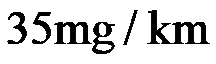
，， 两类物质排放量之和不超过
两类物质排放量之和不超过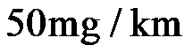
.已知该型号某汽车的，两类物质排放量之和原为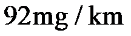
.经过一次技术改进，该汽车的类物质排放量降低了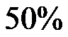
，类物质排放量降低了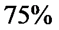
，，两类物质排放量之和为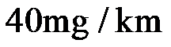
，判断这次技术改进后该汽车的类物质排放量是否符合“标准”，并说明理由.【答案】符合，理由见详解
【解析】
【分析】本题考查了列一元一次方程解应用题，正确理解题意，找到等量关系是解题的关键．
设技术改进后该汽车的A类物质排放量为
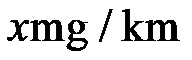
，则B类类物质排放量为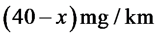
，根据汽车的，两类物质排放量之和原为建立方程求解即可．【详解】解：设技术改进后该汽车的A类物质排放量为，则B类类物质排放量为，
由题意得：
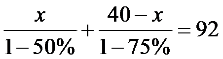
，解得：
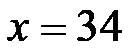
，∵
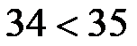
，∴这次技术改进后该汽车的类物质排放量是符合“标准”．